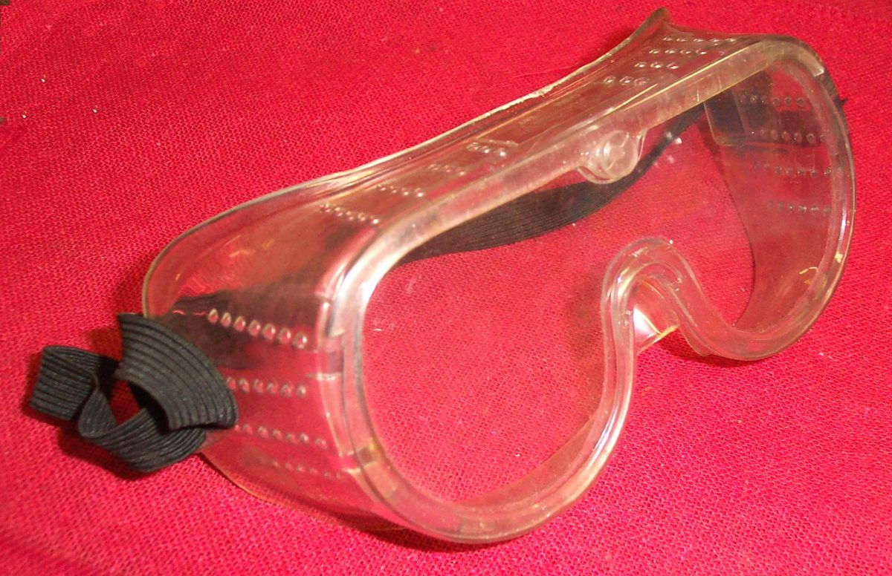
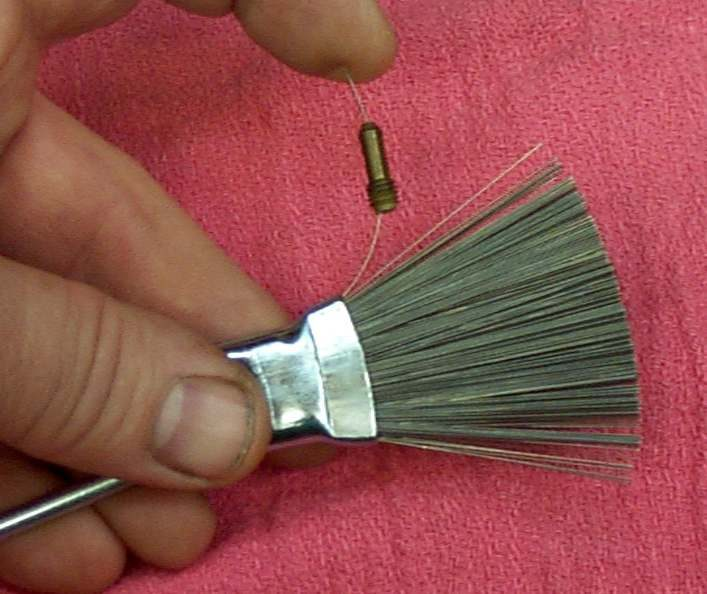
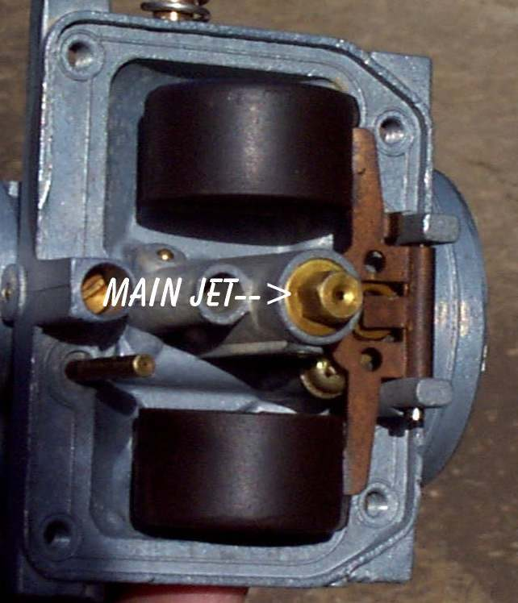
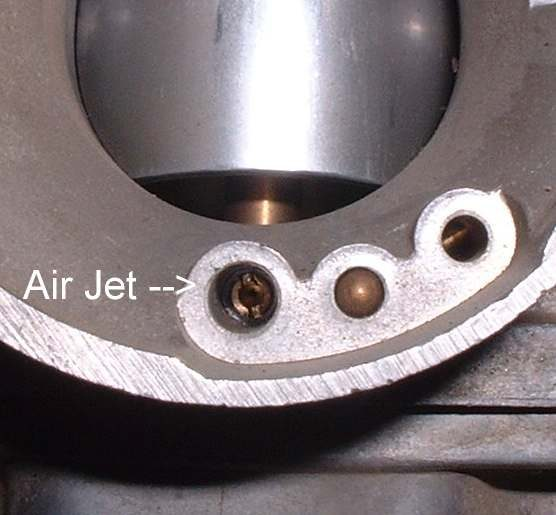
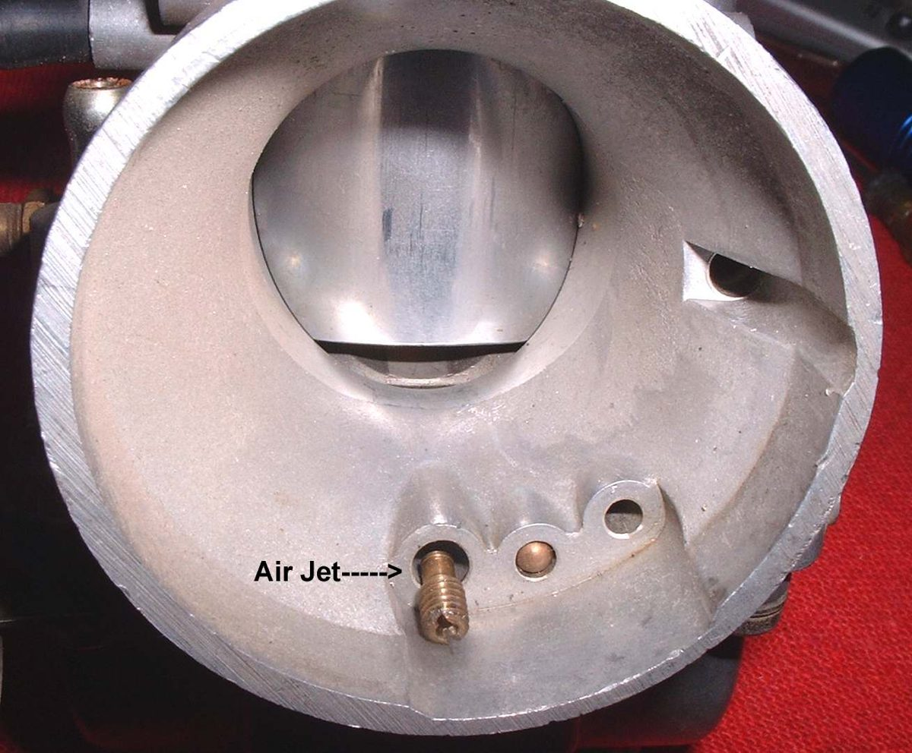

Jets are tiny holes that meter the fuel. Old fuel leaves gum in them. When the carburettor has been standing, the idle and starter passages block first. The engine starts only with the choke on, or not at all. This page covers jets and passages. The wider job is in Clean the carburettor.
Safety
- Wear goggles. Cleaner and compressed air can blow into eyes. Hold small parts in a rag when blowing air through them.
- Work away from flames, in good air.
- Keep cleaner off rubber seals and diaphragms.
You need
- The carburettor off the bike and opened as far as needed. Do not take apart every part. Each extra part is a chance to lose a spring or damage a seal.
- Cleaner spray, compressed air or a foot pump, a soft pick and bright light.
Steps
- Before you remove the idle mixture screw, turn it in until it just seats and count the turns. Write the number down. Dig out any small washer or O-ring with a needle before you spray.
- Remove the main jet and needle jet. The main jet screws into the lower end of the needle jet. Tap the needle jet out gently, because it breaks easily. Note the pin and groove that locate it, and keep any O-ring.
- Remove the idle (pilot) jet with a screwdriver ground to fit. Some idle jets are pressed in and cannot be taken out. Clean those in place with spray and air.
- Soak the loose jets in carburettor cleaner. Do not drop the whole carburettor body in if it has rubber seals on the throttle shaft. Clean the body by hand with spray and a small brush.
- Hold each jet up to a light. You must see light through it, or spray cleaner must pass straight through. If not, it is still blocked.
- If a jet stays blocked, one single strand of soft wire, no thicker than the hole, may free it. Enlarging a jet changes the mixture, so use wire only as a last step and replace the jet if it is cheap.
- Spray into all the passages in the body. Look down the throat while you blow air through. Check that the small idle holes are clear.
- Refit the jets, using any washers, and set the idle mixture screw to the recorded turns.
Check your work
- Light shows through each jet and air comes out of every hole.
- The engine now starts without the choke and idles.
If it did not fix the problem
- Fuel level problems: Check the carburettor float and needle valve.
- Still lean or rough: Engine runs lean.
- Use jets made by the carburettor maker; the maker's mark is stamped on genuine ones.